第 16 讲：游戏 AI 基础——导航、转向、群体模拟、感知与决策
从寻路到行为决策，搭建游戏 AI 的完整基础框架
◆ 学完这一讲，你应该能
学完能解释导航网格（NavMesh）的生成流程与三种地图表示（路点网络、网格、导航网格）的优缺点
学完能手动推导 A* 算法的代价函数与启发函数，并说明启发函数对搜索行为的影响
学完能描述转向行为（Seek/Flee、Velocity Match、Align）的基本原理并写出伪代码
学完能区分群体模拟的微观、宏观、介观模型，并说明 RVO 如何解决碰撞避免
学完能说明行为树（Behavior Tree）的节点类型、执行流程与优缺点，并能设计一个简单的行为树
核心结论速记
导航分为三步：地图表示、寻路、路径平滑；常用地图表示有路点网络、网格、导航网格和稀疏体素八叉树。
A* 用 f(n)=g(n)+h(n) 选择扩展节点，h(n) 必须不高估真实代价才能保证最优；启发函数越接近真实代价，搜索越快。
导航网格用凸多边形表示可行走区域，路径平滑常用漏斗算法（String Pulling）消除锯齿。
转向行为（Steering）将路径转化为受运动能力约束的平滑运动，核心是计算期望速度并限制加速度。
群体模拟分微观（规则驱动）、宏观（连续流）、介观（分组）三类；碰撞避免常用力模型和速度障碍（VO/RVO）。
感知系统包括内部信息、静态空间信息（导航数据、战术地图、掩体点）和动态空间信息（影响图、游戏对象）。
行为树通过组合节点（Sequence、Selector、Parallel）和执行节点（条件、动作）组织逻辑，每帧从根节点 Tick，具有模块化、反应性、易调试的优点。
行为树的缺点是每帧从根节点遍历开销大，反应性越强需要检查的条件越多。
011. 导航总览：从地图表示到平滑路径
游戏 AI 的移动基础是导航（Navigation）：让 AI 自动从地图上一点走到另一点。课件把导航拆成三个步骤：
- 地图表示（Map Representation）：告诉 AI 哪里可以走。玩家的可行走区域由角色控制器决定（例如碰撞胶囊体），AI 需要一张“可行走区域”的抽象地图。
- 寻路（Path Finding）：在抽象地图上找到从起点到终点的路径。
- 路径平滑（Path Smoothing）：原始路径往往有锯齿和多余拐角，需要平滑成自然移动。
课件介绍了四种地图表示：
- 路点网络（Waypoint Network）：在地图上布置关键点，用边连接，类似地铁线路图。
- 网格（Grid）：把地图均匀划分成小格子（正方形、三角形、六边形），标记每个格子是否可行走。
- 导航网格（NavMesh）：用凸多边形精确覆盖可行走区域，支持 3D 表面。
- 稀疏体素八叉树（Sparse Voxel Octree）：表示可飞行的 3D 空间，类似空间划分。
这些表示最终都可以抽象为图（Graph）：节点是路点/格子/多边形，边是它们之间的连接，边的权重是距离或代价。于是寻路就变成了图上的最短路径问题。
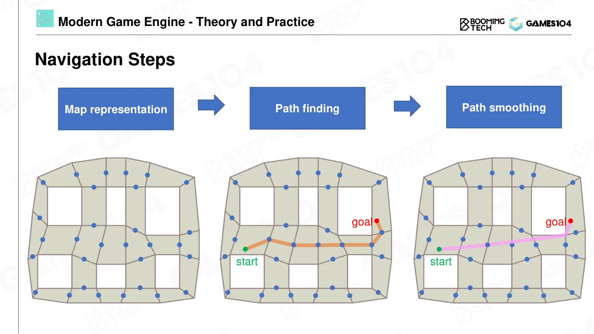
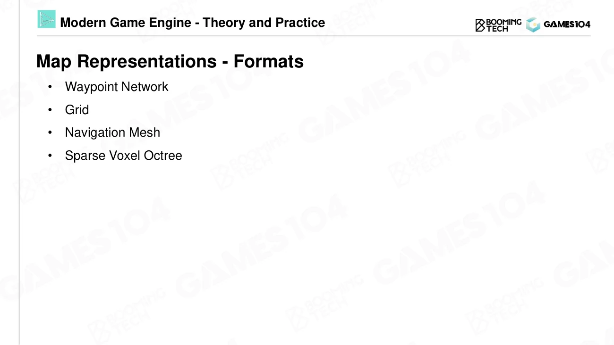
常见坑
把可行走区域直接等同于物理碰撞体 → 导航网格可能包含角色无法通过的小缝隙 → 生成导航网格时要设置 AgentRadius 留出边缘距离。
忽略地图表示的动态更新 → 场景中放置障碍物后 AI 仍然穿墙 → 使用动态网格或导航网格的 Tile 机制增量更新。
UE / Unity 落地
UE：使用 NavMesh Bounds Volume 定义导航区域，Recast NavMesh 自动生成；在 Project Settings 中设置 Agent Radius/Height 等参数。
Unity：使用 NavMesh Surface 组件烘焙导航网格，NavMesh Agent 组件驱动角色移动。
022. 路点网络与网格：简单直观的两种表示
路点网络（Waypoint Network） 是最早也最直观的表示：设计师在地图上放置关键点（waypoint），并在可以通行的点之间连边。使用时，AI 先找到离自己最近的路点，再在路点网络上寻路，最后从出口路点走到目标。它的优点是实现简单、寻路极快（节点少），适合大型地图；缺点是灵活性差——AI 必须走到路点才能转向，路径可能绕远，且路点需要手动布置或自动生成。
网格（Grid） 把地图均匀划分成小格子，每个格子标记为可行走或不可行走。常见形状有正方形、三角形、六边形。网格的优点是实现简单、数据结构统一、支持动态修改（运行时改变格子属性即可反映环境变化）；缺点是精度受格子分辨率影响：格子太密则寻路慢、内存高，格子太疏则路径粗糙，可能贴墙或卡角。
两种表示都容易理解，但面对复杂 3D 地形时，路点网络需要大量手动工作，网格则面临分辨率两难。导航网格（NavMesh）正是为解决这些问题而生的。
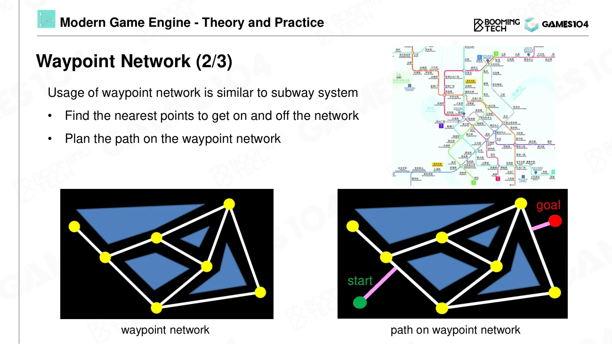
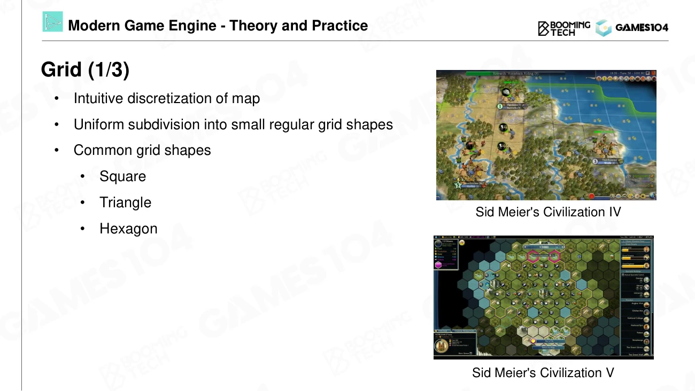
常见坑
路点网络中路点太少 → 路径绕远或无法覆盖所有区域 → 增加路点密度或改用导航网格。
网格分辨率选择不当 → 高分辨率导致 A* 扩展节点爆炸，低分辨率导致路径穿墙 → 根据场景尺度调整格子大小，或使用分层网格。
UE / Unity 落地
UE：早期版本支持路点网络（现在主要用 NavMesh）；网格可用于自定义 AI 逻辑。
Unity：NavMesh 是主流，网格可用于 2D 游戏或自定义寻路。
033. 导航网格（NavMesh）：3D 可行走区域的凸多边形表示
导航网格（Navigation Mesh，NavMesh）用一组相邻的凸多边形来近似角色的可行走区域。相比网格，它直接贴合 3D 表面，没有重叠，精度高且寻路快。
为什么用凸多边形？ 寻路会生成一系列需要穿过的多边形（称为多边形走廊 Polygon Corridor）。凸多边形保证从一条边进入后，可以直线走到任何一条出口边而不离开多边形，这使得路径平滑和穿行计算非常简单。
生成流程（课件后续详述）：
- 体素化（Voxelization）：用体素采样碰撞场景，得到可行走体素。
- 区域分割（Region Segmentation）：根据体素到边界的距离标记边界，用分水岭算法（Watershed）把相邻体素分割成区域。
- 网格生成（Mesh Generation）：从分割后的区域生成凸多边形，组成 NavMesh。
NavMesh 的优点是支持 3D 表面、精确、寻路快、起点终点选择灵活；缺点是需要烘焙、动态更新成本较高（可通过 Tile 和 Off-mesh Link 缓解）。
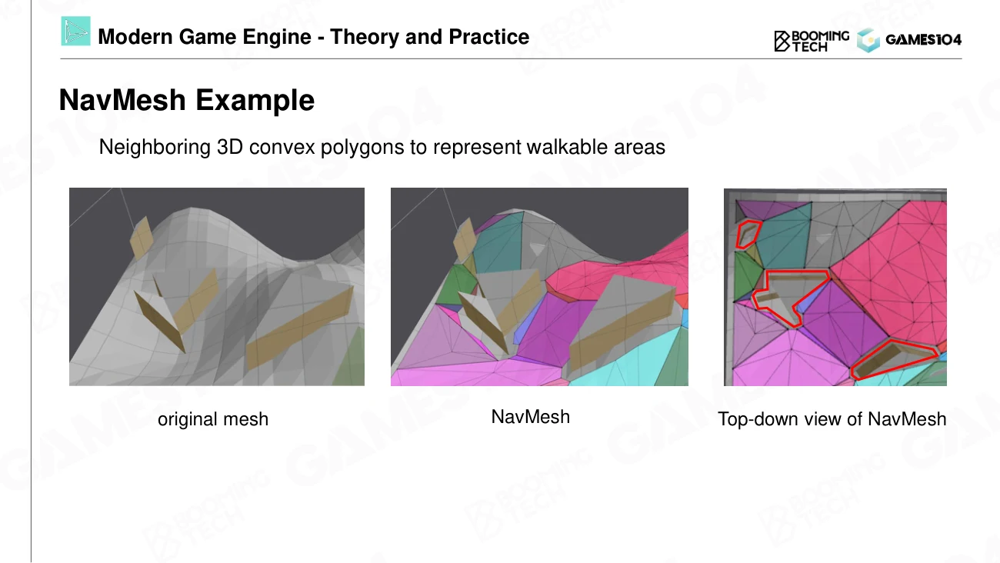
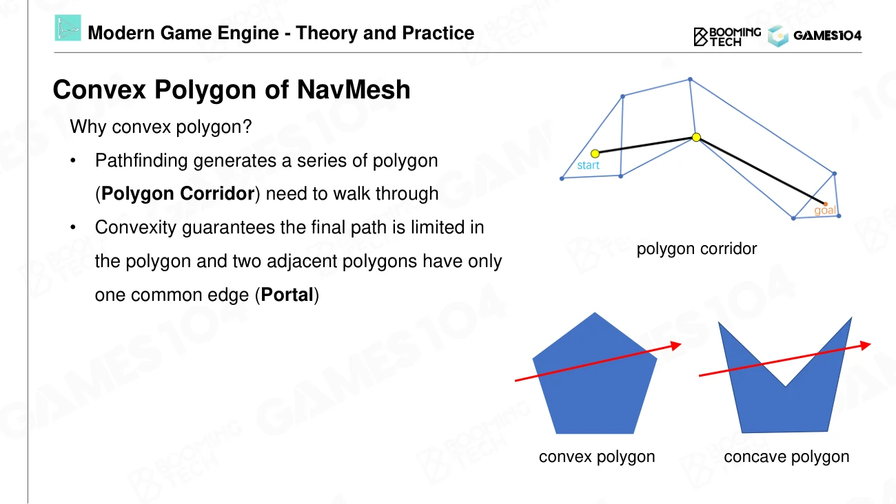
常见坑
NavMesh 未覆盖所有可行走区域 → AI 在边缘卡住 → 检查烘焙参数（Agent Radius、Max Slope、Step Height）是否合理。
动态障碍物未更新 NavMesh → AI 路径穿过新放置的物体 → 使用 NavMesh Obstacle 组件或动态烘焙。
UE / Unity 落地
UE：Recast NavMesh 自动生成，支持动态 Tile 和 Off-mesh Link；使用 NavMesh Modifier 标记区域。
Unity：NavMesh Surface 烘焙，NavMesh Obstacle 处理动态障碍。
044. 寻路算法：从 DFS/BFS 到 A*
地图表示抽象为图后，寻路就是图上的最短路径问题。课件依次介绍了：
- 深度优先搜索（DFS）：扩展最近加入的节点，不保证最短路径，可能绕远。
- 广度优先搜索（BFS）：扩展最早加入的节点，在无权图上保证最短路径，但盲目扩展所有方向。
- Dijkstra 算法：带权图的最短路径，每次扩展当前代价最小的节点，保证最优但效率低。
- A* 算法：在 Dijkstra 基础上加入启发函数，优先扩展最有希望的节点。
A* 的核心公式：\[ f(n) = g(n) + h(n) \] 其中 \( g(n) \) 是从起点到节点 \( n \) 的已知实际代价，\( h(n) \) 是从 \( n \) 到终点的启发式估计代价。A* 每次从开放列表中选取 \( f(n) \) 最小的节点扩展。
启发函数 \( h(n) \) 的性质：
- 如果 \( h(n) \) 从不高估真实代价（可采纳性），A* 保证找到最短路径。
- \( h(n) \) 越接近真实代价，搜索越快；\( h(n)=0 \) 退化为 Dijkstra；\( h(n) \) 过大则可能找不到最优路径。
网格上的启发函数：常用曼哈顿距离（Manhattan distance）：\[ h(n) = D \cdot (|dx| + |dy|) \] 其中 \( D \) 是相邻格子的移动代价。如果允许对角线移动，可用对角线距离。
NavMesh 上的启发函数：由于多边形内可任意方向移动，常用直线距离（欧几里得距离）。用多边形中心或顶点计算可能高估，需要谨慎。
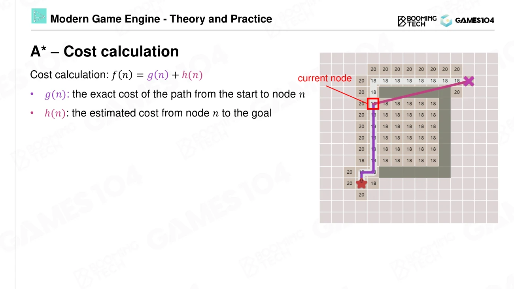
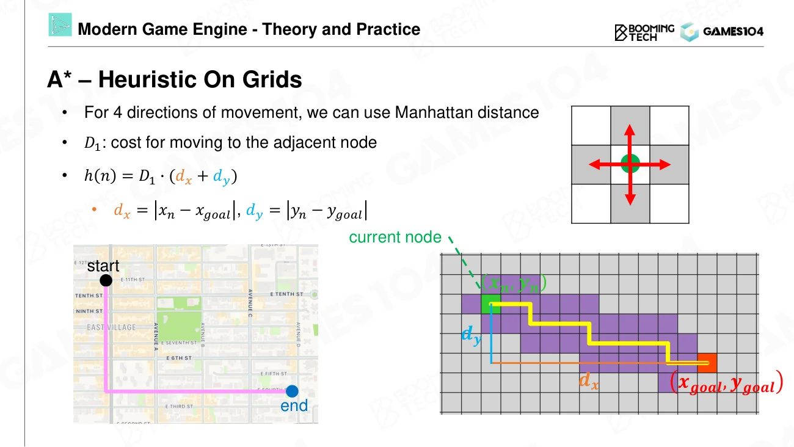
常见坑
启发函数高估真实代价 → A* 可能返回次优路径 → 确保 h(n) 不超过实际最小代价（例如使用直线距离时不要乘大于 1 的系数）。
开放列表使用线性查找 → 大图寻路极慢 → 使用二叉堆（优先队列）管理开放列表。
未处理节点重复加入 → 内存暴涨 → 使用 closed 集合记录已扩展节点。
UE / Unity 落地
UE：Navigation System 内部使用 A*（Recast/Detour），开发者通常无需手写。
Unity：NavMesh Agent 自动寻路，也可用 NavMesh.CalculatePath 获取路径。
A* 伪代码（简化）（cpp）
struct Node { float g, h; Node* parent; };
float f(Node* n) { return n->g + n->h; }
std::priority_queue<Node*, std::vector<Node*>, CompareByF> open;
std::unordered_set<Node*> closed;
open.push(start);
while (!open.empty()) {
Node* current = open.top(); open.pop();
if (current == goal) { /* 重建路径 */ break; }
closed.insert(current);
for (Node* neighbor : current->neighbors) {
if (closed.count(neighbor)) continue;
float tentative_g = current->g + distance(current, neighbor);
if (tentative_g < neighbor->g) {
neighbor->parent = current;
neighbor->g = tentative_g;
neighbor->h = heuristic(neighbor, goal);
open.push(neighbor);
}
}
}055. 路径平滑与漏斗算法
A* 在导航网格上生成的原始路径是穿过多边形序列的折线，往往有锯齿和多余拐角。直接让角色沿折线走会显得机械。路径平滑的目标是生成一条自然、最短的平滑路径。
课件介绍的 漏斗算法（Funnel Algorithm / String Pulling） 是常用方法：
- 把路径想象成一根绳子，起点和终点固定，绳子被多边形边界“拉紧”。
- 算法维护一个“漏斗”，漏斗的左右边界是多边形走廊的边。
- 从起点开始，依次检查下一个多边形，收窄漏斗；如果漏斗的某一边被“卡住”（即新边界超出当前漏斗），则把卡住的那个顶点作为路径拐点，并重置漏斗。
- 当终点进入漏斗时，算法终止。
这样得到的路径是穿过多边形走廊的最短路径，且拐点只出现在必要的位置，消除了锯齿。
为什么需要平滑？ 原始路径可能包含大量不必要的转向，导致角色移动不自然、动画切换频繁。平滑后的路径更短、更平滑，也更容易被转向行为跟随。
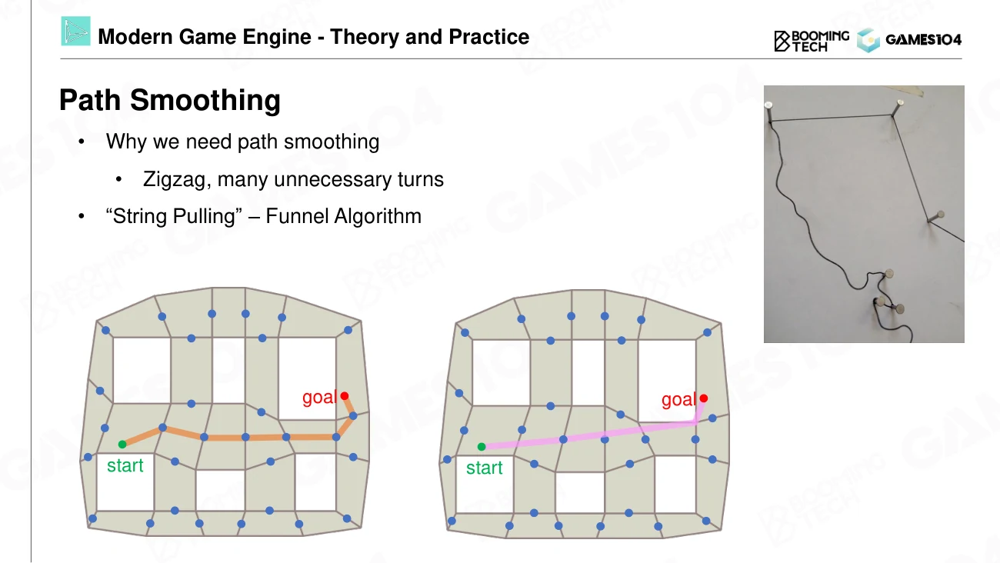
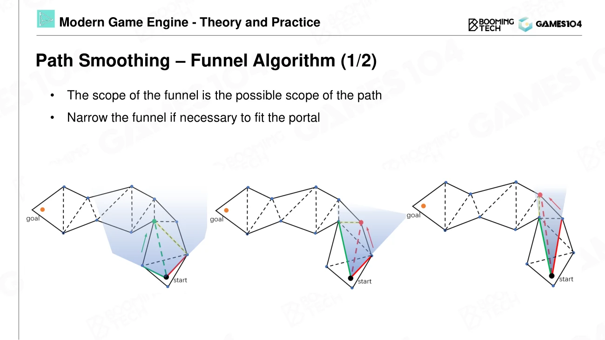
常见坑
平滑时未考虑角色半径 → 路径紧贴墙角导致穿模 → 在生成 NavMesh 时已用 AgentRadius 留出距离，平滑时无需再处理。
漏斗算法中边界判断错误 → 路径穿过不可行走区域 → 仔细处理左右边界的更新和卡住条件。
UE / Unity 落地
UE：Navigation System 自动进行路径平滑（使用类似漏斗算法），开发者可通过参数调整。
Unity：NavMesh Agent 的路径自动平滑，也可用 NavMesh.CalculatePath 获取原始路径后自行平滑。
066. 转向行为（Steering）：从路径到运动
寻路给出了一条路径，但角色不能瞬间转向或变速。转向行为（Steering Behaviors）负责把路径转化为受运动能力约束的平滑运动。课件以车辆为例：车辆受最大线加速度、最大角速度等限制，不能精确跟随路径。
常见的转向行为：
- Seek / Flee：朝目标加速或远离目标。计算期望速度（指向目标），然后产生一个加速度使当前速度趋向期望速度，并限制最大加速度。
- Velocity Match：匹配目标速度。根据速度差和匹配时间计算加速度，并限制最大加速度。
- Align：匹配目标朝向。输入当前朝向和目标朝向，输出角加速度，使角色平滑转向。
Seek 的变体：通过运行时修改目标，可以产生新的行为，例如：
- Pursue：追逐移动目标（预测目标未来位置）。
- Path Following：沿路径移动。
- Wander：随机游荡。
- Flow Field Following：跟随流场。
转向行为的核心是：计算期望速度/朝向，然后施加受限制的加速度，使运动平滑自然。
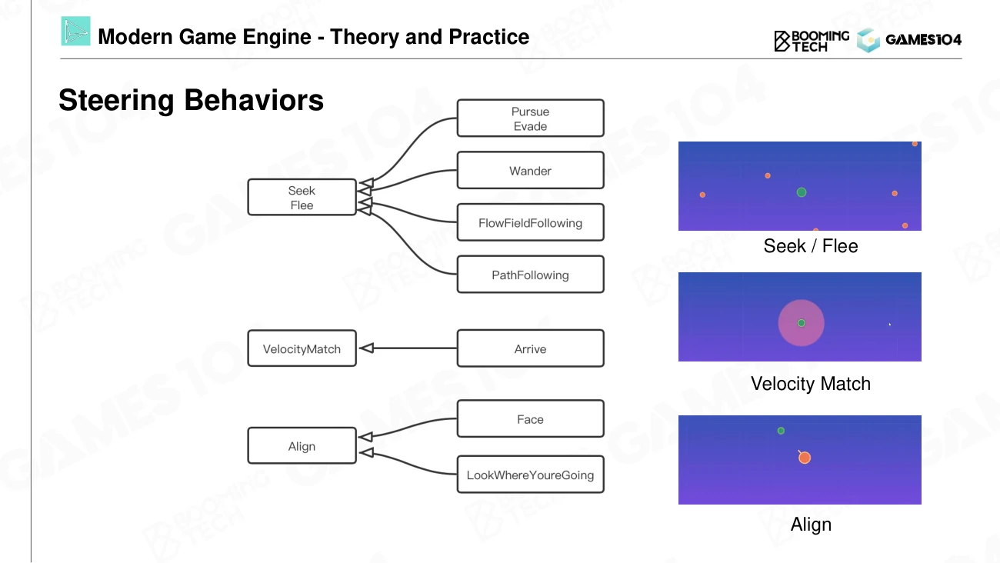
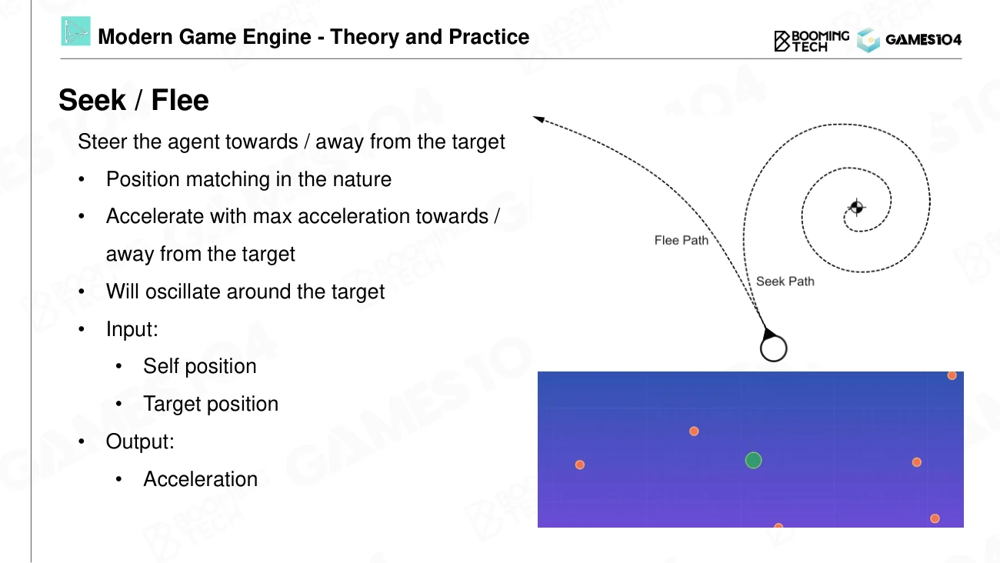
常见坑
未限制加速度 → 角色瞬间转向，运动僵硬 → 对加速度和角速度施加 Clamp。
Seek 直接设置速度而非加速度 → 与物理系统冲突 → 应通过力/加速度驱动。
UE / Unity 落地
UE：Character Movement Component 提供移动控制，可结合 AI MoveTo 和自定义转向逻辑。
Unity：NavMesh Agent 的 Steering 参数（Speed、Angular Speed、Acceleration）控制转向行为。
Seek 伪代码（cpp）
Vector3 Seek(Vector3 position, Vector3 target, Vector3 currentVelocity, float maxAccel) {
Vector3 desired = (target - position).normalized() * maxSpeed;
Vector3 accel = (desired - currentVelocity) / timeToTarget;
return accel.limit(maxAccel);
}077. 群体模拟与碰撞避免
群体模拟（Crowd Simulation）处理大量个体在同一环境中的运动，包括碰撞避免、集群（Swarming）等。课件将模型分为三类：
- 微观模型（Microscopic）：自底向上，关注每个个体的运动。典型是 Reynolds 的 Boids 规则模型（分离、对齐、聚合），实现简单但难以模拟复杂行为规则。
- 宏观模型（Macroscopic）：把群体视为连续整体，用密度、流量等宏观量控制运动，适合大规模人群但忽略个体细节。
- 介观模型（Mesoscopic）：将群体分组，兼顾细节与整体，处理组间交互。
碰撞避免是群体模拟的核心问题，常用两类方法：
- 力模型（Force-based）：混合社会心理力和物理力，个体受到吸引/排斥力。优点是能产生涌现行为，缺点是类似物理模拟，参数调优困难。
- 速度模型（Velocity-based）：在速度空间做决策，考虑邻居信息。典型算法：
- 速度障碍（Velocity Obstacle, VO）：假设其他个体不响应，计算自身躲避速度。
- 互惠速度障碍（Reciprocal Velocity Obstacle, RVO）：假设双方使用相同决策过程，各承担一半避让责任，运动更自然。
RVO 广泛应用于游戏和机器人领域，UE 的 Detour Crowd 也采用了类似思想。
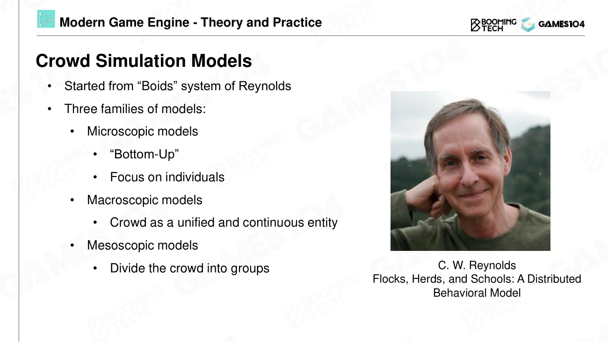
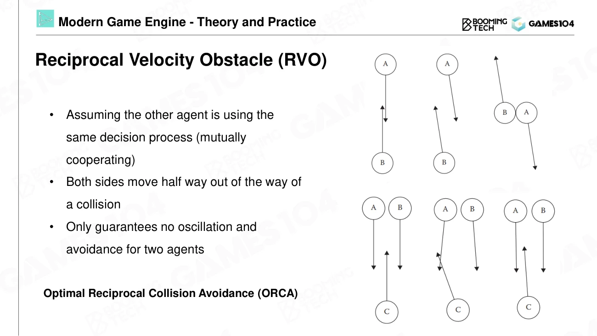
常见坑
力模型参数不当 → 个体震荡或穿透 → 调整排斥力范围和强度，结合速度模型。
RVO 中未考虑邻居速度 → 碰撞 → 确保使用正确的速度障碍几何计算。
UE / Unity 落地
UE：Detour Crowd 支持群体避让，可设置避让质量。
Unity：NavMesh Agent 的 Obstacle Avoidance 类型（None、Low、Medium、High）控制避让行为。
088. 感知系统与经典决策算法
感知（Sensing） 是 AI 获取信息的方式，包括：
- 内部信息：自身位置、HP、护甲、Buff 等，可直接访问。
- 静态空间信息：导航数据、战术地图、掩体点、智能对象（Smart Object）。
- 动态空间信息：影响图（Influence Map，标记视野区域等）、游戏对象（角色位置、状态）。
感知模拟考虑光、声、气味在空间中的传播：有最大范围，随距离和时间衰减。
经典决策算法 包括有限状态机（FSM）、行为树（BT）、分层任务网络（HTN）、目标导向行动规划（GOAP）、蒙特卡洛树搜索（MCTS）等。课件重点介绍 FSM 和 BT：
- FSM：状态和转换条件，简单快速，但状态多时转换爆炸，难以维护。
- 分层有限状态机（HFSM）：在反应性和模块化之间折中。
- 行为树（BT）：用树形结构组织行为，模块化、反应性好、易调试，但每帧从根节点遍历开销大。
行为树的节点类型：
- 执行节点（叶节点）：条件节点、动作节点。
- 控制节点（内部节点）：Sequence（顺序执行，直到失败）、Selector（选择执行，直到成功）、Parallel（并行执行）。
- 装饰器（Decorator）：单子节点，实现计时、取反等。
- 黑板（Blackboard）：存储共享数据。
行为树每帧从根节点 Tick，根据返回值决定执行流。
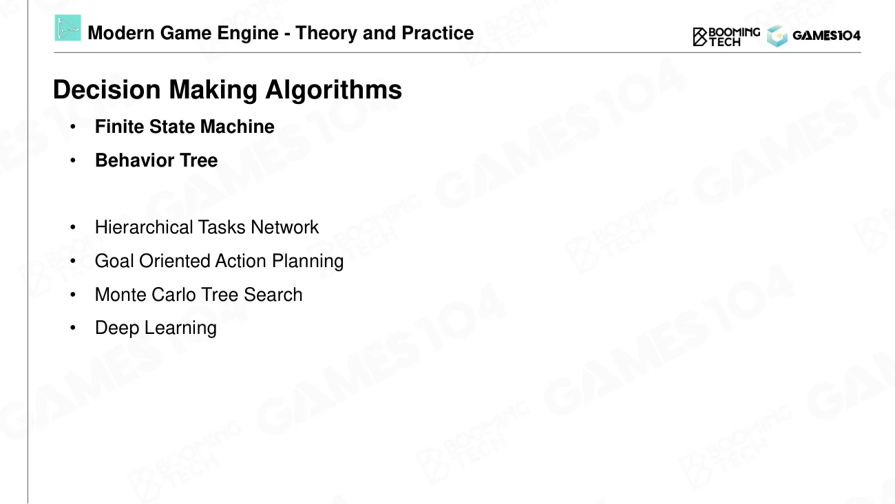
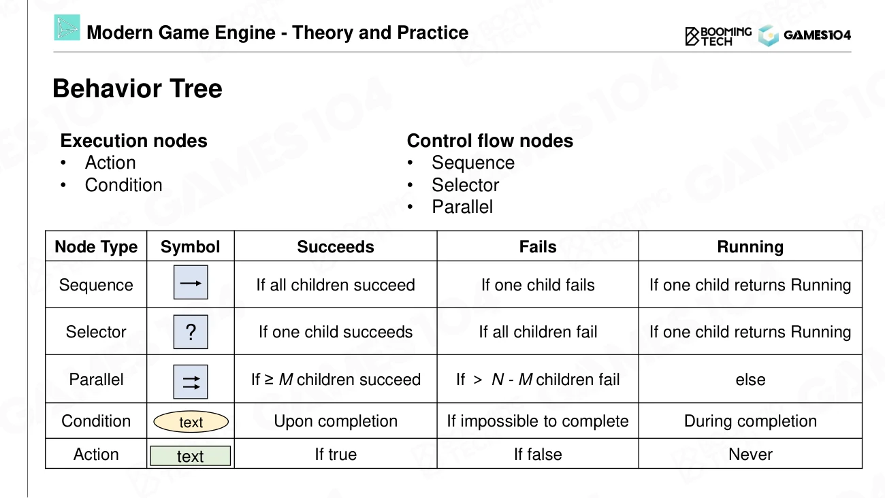
常见坑
行为树每帧从根节点遍历 → 大型行为树性能差 → 使用事件驱动或缓存运行状态。
FSM 状态转换未覆盖所有情况 → AI 卡死 → 使用 HFSM 或行为树替代。
UE / Unity 落地
UE：行为树编辑器（Behavior Tree）和黑板（Blackboard）是 AI 的核心工具，配合 AI Controller 使用。
Unity：可使用 Behavior Designer 等插件，或自己实现行为树。
引擎对照表
| 概念 / 效果 | Unreal Engine | Unity |
|---|---|---|
导航网格生成 | Recast NavMesh + NavMesh Bounds Volume | NavMesh Surface 烘焙 |
寻路 | Navigation System（A*） | NavMesh Agent / NavMesh.CalculatePath |
路径平滑 | 自动平滑（漏斗算法） | 自动平滑 |
转向行为 | Character Movement Component + AI MoveTo | NavMesh Agent Steering 参数 |
群体避让 | Detour Crowd | NavMesh Agent Obstacle Avoidance |
决策逻辑 | Behavior Tree + Blackboard | Behavior Designer 插件或自定义 |
术语双语表
| English | 中文 | 说明 |
|---|---|---|
| Navigation Mesh (NavMesh) | 导航网格 | 用凸多边形表示可行走区域的 3D 地图表示 |
| A* Algorithm | A* 算法 | 结合 Dijkstra 和启发式搜索的最短路径算法 |
| Heuristic Function | 启发函数 | 估计从当前节点到终点代价的函数，影响 A* 的搜索行为 |
| Funnel Algorithm | 漏斗算法 | 路径平滑算法，通过收窄漏斗找到最短路径拐点 |
| Steering Behavior | 转向行为 | 将路径转化为受运动约束的平滑运动的技术 |
| Crowd Simulation | 群体模拟 | 模拟大量个体运动的模型，分微观、宏观、介观 |
| Reciprocal Velocity Obstacle (RVO) | 互惠速度障碍 | 双方各承担一半避让责任的碰撞避免算法 |
| Behavior Tree (BT) | 行为树 | 用树形结构组织 AI 决策逻辑的算法 |
| Blackboard | 黑板 | 行为树中存储共享数据的键值存储 |
| Finite State Machine (FSM) | 有限状态机 | 通过状态和转换条件描述行为的经典模型 |
课后练习
01 简述导航网格（NavMesh）相比网格（Grid）表示的三个优点。
查看答案
提示：
从 3D 支持、精度、寻路效率角度考虑。
1) 支持 3D 可行走表面，能贴合复杂地形；2) 用凸多边形精确覆盖可行走区域，没有重叠，精度高；3) 多边形数量远少于网格，寻路更快。
02 在 A* 算法中，如果启发函数 h(n) 高估了真实代价，会发生什么？为什么？
查看答案
提示：
考虑可采纳性（admissibility）。
如果 h(n) 高估真实代价，A 可能返回次优路径。因为 A 优先扩展 f 值最小的节点，高估的 h 会使某些实际最优路径上的节点 f 值偏大，从而被推迟扩展，导致算法提前找到一条非最优路径就停止。
03 用伪代码描述 Seek 转向行为，并说明如何限制加速度。
查看答案
提示：
期望速度 = 指向目标的方向 * 最大速度；加速度 = (期望速度 - 当前速度) / 时间；最后 clamp。
Vector3 Seek(position, target, currentVelocity, maxSpeed, maxAccel, timeToTarget) { Vector3 desired = (target - position).normalized() * maxSpeed; Vector3 accel = (desired - currentVelocity) / timeToTarget; return accel.limit(maxAccel); } 其中 limit 将向量长度限制在 maxAccel 以内。
04 行为树中的 Sequence 和 Selector 节点有什么区别？请各举一个游戏中的例子。
查看答案
提示：
Sequence 是“顺序执行直到失败”，Selector 是“选择执行直到成功”。
Sequence 从左到右执行子节点，直到一个子节点失败则返回失败，全部成功则返回成功；例如“开门”任务：检查门是否锁→解锁→开门→通过。Selector 从左到右执行子节点，直到一个子节点成功则返回成功，全部失败则返回失败；例如“应对幽灵”：如果幽灵靠近且自己不强→逃跑；如果自己强大→追逐；否则→吃豆子。
05 在 UE 中，如何为一个 AI 角色设置导航网格和基本的行为树？请列出关键步骤。
查看答案
提示：
涉及 NavMesh Bounds Volume、Behavior Tree、Blackboard、AIController。
1) 在场景中放置 NavMesh Bounds Volume 覆盖可行走区域，按 P 键查看生成的绿色导航网格；2) 创建 Behavior Tree 和 Blackboard 资产，在 Blackboard 中定义键（如目标位置）；3) 创建 AIController 蓝图，在事件 BeginPlay 中运行行为树；4) 在行为树中组合 Sequence、Selector、Move To 等节点，使用 Blackboard 键传递数据；5) 将 AIController 设置给 AI 角色。